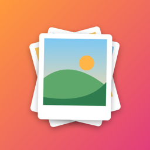

Política de privacidad
Recollect · Actualizada el 19 de noviembre de 2026
Recollect no recoge, guarda ni comparte ningún dato personal. No hay cuentas, ni publicidad, ni analítica, ni seguimiento.
Tus fotos
Recollect pide acceso a tu fototeca para enseñarte las fotos y vídeos de un día como hoy. Las fotos se leen y se analizan solo en tu dispositivo (por ejemplo, para encontrar fotos parecidas o mal giradas) y nunca salen de él. Recollect solo cambia algo en tu fototeca cuando tú lo pides: marcar favoritas, girar o borrar.
Lo que se guarda en tu iPhone
Tus ajustes de la app (por ejemplo, la hora del aviso diario o los días y fotos que has ocultado) se guardan solo en tu dispositivo, para que la app y el widget los usen. No se envían a ningún sitio.
Compartir
Si compartes una foto o una tarjeta, se hace con la hoja de compartir de iOS y llega solo a donde tú elijas.
Contacto
Si tienes cualquier duda sobre privacidad, escribe a david.cardona@gmail.com.
English
Recollect does not collect, store or share any personal data. There are no accounts, ads, analytics or tracking. Your photos are read and analysed only on your device and never leave it. App settings are stored only on your device. Questions: david.cardona@gmail.com.